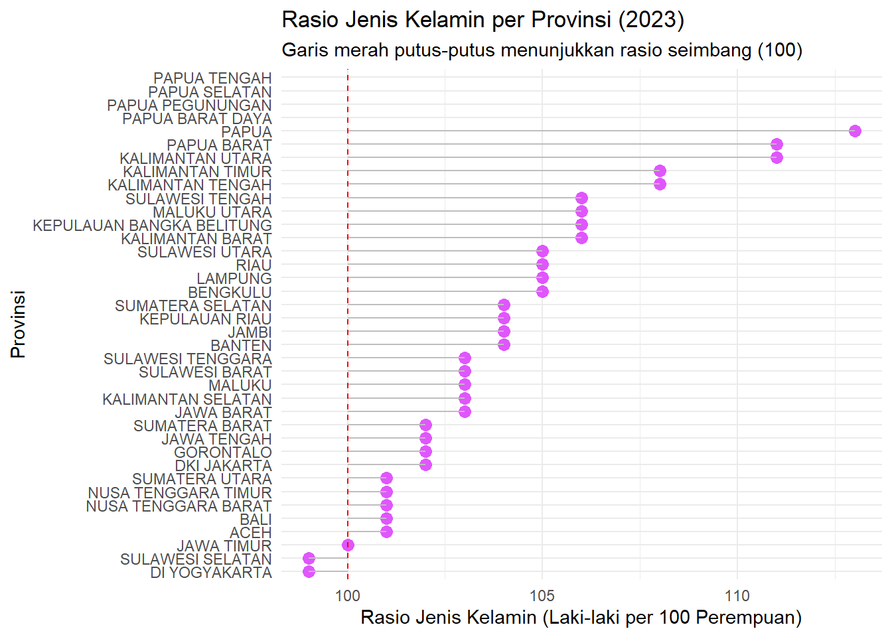
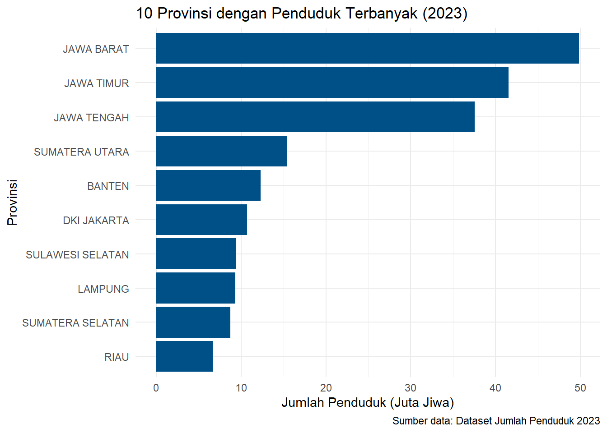

| No | Cakupan | Satuan | LAKI LAKI | PEREMPUAN | TOTAL | RASIO JENIS KELAMIN |
|---|---|---|---|---|---|---|
| 1 | ACEH | Orang | 2753176 | 2729351 | 5482527 | 101 |
| 2 | SUMATERA UTARA | Orang | 7721314 | 7665326 | 15386640 | 101 |
| 3 | SUMATERA BARAT | Orang | 2900268 | 2856937 | 5757205 | 102 |
| 4 | RIAU | Orang | 3396387 | 3246487 | 6642874 | 105 |
| 5 | JAMBI | Orang | 1872177 | 1806992 | 3679169 | 104 |
| 6 | SUMATERA SELATAN | Orang | 4453902 | 4289620 | 8743522 | 104 |
1. Menampilkan 5 data teratas
Pertama, kita akan mencoba untuk menampilkan sampel 5 data teratas dari sumber data yang digunakan.
2. Merapihkan nama kolom dan memfilter data
| provinsi | satuan | laki_laki | perempuan | total | rasio_jk |
|---|---|---|---|---|---|
| JAWA BARAT | Orang | 25264916 | 24595414 | 49860330 | 103 |
| JAWA TIMUR | Orang | 20711675 | 20816259 | 41527934 | 100 |
| JAWA TENGAH | Orang | 18866423 | 18674539 | 37540962 | 102 |
| SUMATERA UTARA | Orang | 7721314 | 7665326 | 15386640 | 101 |
| BANTEN | Orang | 6262727 | 6045005 | 12307732 | 104 |
| DKI JAKARTA | Orang | 5371646 | 5300454 | 10672100 | 102 |
| SULAWESI SELATAN | Orang | 4651181 | 4711109 | 9362290 | 99 |
| LAMPUNG | Orang | 4760262 | 4553724 | 9313986 | 105 |
| SUMATERA SELATAN | Orang | 4453902 | 4289620 | 8743522 | 104 |
| RIAU | Orang | 3396387 | 3246487 | 6642874 | 105 |
| SUMATERA BARAT | Orang | 2900268 | 2856937 | 5757205 | 102 |
| KALIMANTAN BARAT | Orang | 2887209 | 2736119 | 5623328 | 106 |
| NUSA TENGGARA TIMUR | Orang | 2784901 | 2784167 | 5569068 | 101 |
| NUSA TENGGARA BARAT | Orang | 2786443 | 2773844 | 5560287 | 101 |
| ACEH | Orang | 2753176 | 2729351 | 5482527 | 101 |
| PAPUA | Orang | 2376744 | 2105948 | 4482692 | 113 |
| BALI | Orang | 2209736 | 2194526 | 4404262 | 101 |
| KALIMANTAN SELATAN | Orang | 2135703 | 2086630 | 4222333 | 103 |
| KALIMANTAN TIMUR | Orang | 2027088 | 1882653 | 3909741 | 108 |
| DI YOGYAKARTA | Orang | 1849541 | 1886948 | 3736489 | 99 |
| JAMBI | Orang | 1872177 | 1806992 | 3679169 | 104 |
| SULAWESI TENGAH | Orang | 1583646 | 1503104 | 3086750 | 106 |
| KALIMANTAN TENGAH | Orang | 1434119 | 1339628 | 2773747 | 108 |
| SULAWESI TENGGARA | Orang | 1392544 | 1356470 | 2749014 | 103 |
| SULAWESI UTARA | Orang | 1369846 | 1311689 | 2681535 | 105 |
| KEPULAUAN RIAU | Orang | 1095086 | 1057539 | 2152625 | 104 |
| BENGKULU | Orang | 1065992 | 1020014 | 2086006 | 105 |
| MALUKU | Orang | 971580 | 948882 | 1920462 | 103 |
| KEPULAUAN BANGKA BELITUNG | Orang | 776607 | 735292 | 1511899 | 106 |
| SULAWESI BARAT | Orang | 750773 | 730304 | 1481077 | 103 |
| MALUKU UTARA | Orang | 685146 | 652002 | 1337148 | 106 |
| GORONTALO | Orang | 611784 | 601398 | 1213182 | 102 |
| PAPUA BARAT | Orang | 622228 | 565039 | 1187267 | 111 |
| KALIMANTAN UTARA | Orang | 384010 | 346000 | 730010 | 111 |
| PAPUA PEGUNUNGAN | Orang | NA | NA | NA | NA |
| PAPUA SELATAN | Orang | NA | NA | NA | NA |
| PAPUA TENGAH | Orang | NA | NA | NA | NA |
| PAPUA BARAT DAYA | Orang | NA | NA | NA | NA |
3. Menampilkan Grafik Rasio Jenis Kelamin per Provinsi

4. Menampilkan 10 Provinsi dengan Penduduk Terbanyak
